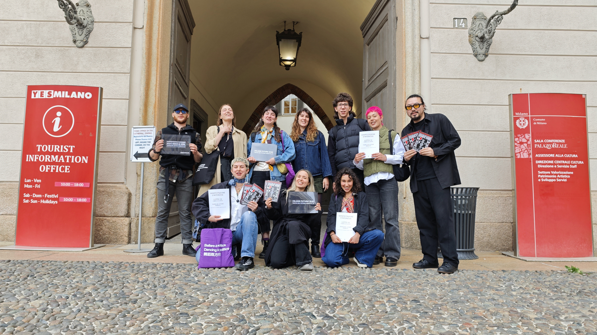
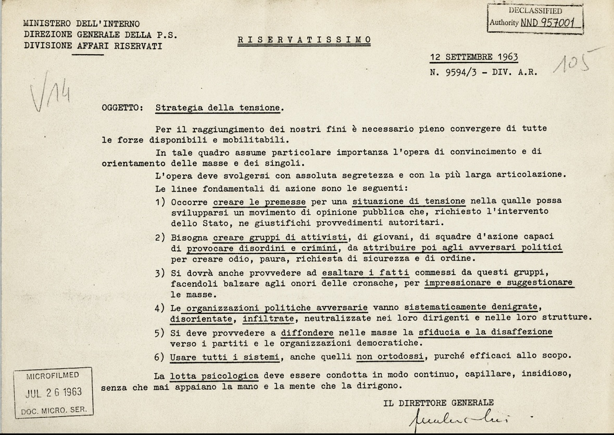

28 Luglio 2026
 Thomas Anderson
Thomas Anderson
LA RIVOLUZIONE DEL CLUBBING ITALIANO: IL TEMPIO DI MILANO
Come un'ex officina tranviaria abbandonata è diventata una delle comunità culturali indipendenti più estese d'Italia.

20 Luglio 2026
 Tommaso Dapri
Tommaso Dapri
LA DEMORALIZZAZIONE COME ARMA DI GUERRA
La guerra invisibile per il controllo della cultura.